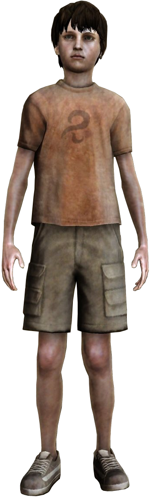

SILENT HILL
HARRY MASON
Cuando tenía 25 años, Harry y su mujer encontraron un bebé abandonado al
margen de la carretera a la que llamaron Cheryl. Sin embargo, tres años más tarde Jodie fue
víctima de una enfermedad terminal y murió de manera inesperada, por lo que en adelante
Harry se encargó de criar a la niña él solo.
Cuatro años después aún seguía profundamente afectado por el fallecimiento de su esposa.
Cheryl, entonces una niña de siete, le convenció para tomarse unas relajantes vacaciones en
el pintoresco pueblo turístico de Silent Hill.
DAHLIA GILLESPIE
Dahlia Gillespie es la líder de La Orden, un culto que adora a su propio
Dios.Es la madre de Alessa Gillespie, cuya presencia ha invocado actividad Poltergeist desde
que era niña. Estas alteraciones, junto con los poderes telequinéticos latentes de Alessa,
la valieron el apodo de bruja por sus compañeros de clase. Ella es de una de los primeros
antagonistas de la serie y es la responsable de la mayoría de los terribles acontecimientos
que ocurrieron en Silent Hill.
CHERYL MASON
Cheryl Mason es la hija adoptiva de Harry Mason en Silent Hill. Ella
desaparece después de que Harry Mason estrellase su coche a su llegada al pueblo, y
encontrarla se convierte en su principal objetivo a través del juego. Siete años antes del
primer juego, Alessa Gillespie divide su alma en un ritual realizado por su madre, Dahlia
Gillespie. El alma se manifiesta en una bebé. Harry Mason y su esposa, encuentran a un lado
de la carretera a la bebé abandonada, a la cual adoptan y se llevan a casa.
SILENT HILL 2
JAMES SUNDERLAND
James Sunderland es el protagonista de Silent Hill 2. A medida que el juego
comienza, James señala que su esposa, Mary Shepherd-Sunderland, lleva tres años muerta. Sin
embargo, James ha recibido una misteriosa carta con la letra de Mary, en la que afirma que
ella le espera en su "lugar especial", en algún lugar de Silent Hill. Cuando James llega al
pueblo, se ve envuelto en una serie de acontecimientos extraños y de pesadilla que le
obligan a cuestionar su cordura, su memoria y su personalidad.
MARY SHEPHERD

Mary Shepherd-Sunderland (apellido de soltera Shepherd) es la difunta esposa
de James Sunderland. La pareja fue de vacaciones a Silent Hill unos pocos años antes de los
acontecimientos de Silent Hill 2. Mary era una mujer joven dulce y amable que pasó los
últimos momentos de su vida en agonía después de adquirir una enfermedad terminal.
PYRAMID HEAD
Pyramid Head (conocido en español como Cabeza Piramidal, Cabeza de Pirámide
o Cosa Piramidal Roja) es un monstruo humanoide de la franquicia Silent Hill que aparece por
primera vez en Silent Hill 2. Su casco rojo y su atuendo de carnicero reflejan a los
verdugos del pasado del pueblo, que adoraban al ángel del renacimiento Valtiel. Él es una
manifestación de la culpa y el deseo de castigo de James Sunderland, que existe para
mantenerlo humano y ayudarle a recordar sus acciones pasadas. El monstruo empuña el Gran
Cuchillo y la Gran Lanza, instrumentos del tormento interior de James. Después de que James
mata a Eddie Dombrowski en defensa propia, se materializa un segundo Pyramid Head.
SILENT HILL 3
HEATHER MASON

El nombre real de Heather es Cheryl, la hija adoptiva del escritor Harry
Mason, quien sobrevivió a los acontecimientos del primer Silent Hill. Cuando Harry escapó de
Silent Hill, Alessa volvió como una aparición y le dio un nuevo bebé, el cual era tanto
Cheryl como Alessa, fusionadas en un mismo cuerpo. Harry dejó Silent Hill con la bebé y se
mudaron a Portland; sin embargo, fueron atacados por un miembro de La Orden, el cual acabó
con la vida de Harry con el fin de recuperar a la reencarnación de Alessa.
ALESSA GILLESPIE
Alessa Gillespie es un personaje principal de la saga de Silent Hill, y su
primera aparición tuvo lugar en el original Silent Hill en el año 1999. Se presenta como una
gran influencia de los eventos de la serie, una fuerza motriz del estado actual de la
realidad alternativa de Silent Hill, y es una, si no el más, influyente personaje de la
serie.
DOUGLAS CARTLAND
Douglas Cartland es un detective privado de mediana edad contratado por
Claudia Wolf, la líder del culto, para localizar a Heather Mason y llevarla a Silent Hill.
Su voz es la de Richard Grosse, quien falleció antes de que el juego fuera lanzado.
SILENT HILL 4: THE ROOM
HENRY TOWNSHEND
Como se indica en el manual de instrucciones, Henry Townshend es visto como
un "hombre joven que nunca deja ver sus sentimientos". Henry es alguien con un alma
tranquila, tímido e introvertido en su personalidad. Esto se acentúa ya que no habla mucho,
y es más un oyente. La timidez de Henry y el comportamiento extraño de vez en cuando puede
indicar que es algo así como un ermitaño. No se hace mención de sus amigos o familiares a
través del juego, e incluso sus vecinos lo conocen sólo de pasada. La confrontación de Henry
con Walter Sullivan es una obligación que lo fuerza a cambiar (y dejar el apartamento), o
morir.
EILEEN GALVIN
Eileen Galvin es un personaje importante en Silent Hill 4: The Room. Es la
vecina de Henry Townshend, la cual vive junto a su apartamento en la habitación 303. Aunque
Henry ha vivido en South Ashfield Heights por más de dos años, Eileen tiene sólo una
familiaridad con él. Es posible que Eileen viviera en el apartamento 303 mucho antes de la
llegada de Henry, ya que ella conocía a Joseph Schreiber hasta su misteriosa desaparición.
WALTER SULLIVAN
Walter Sullivan es el principal antagonista de Silent Hill 4: The Room. Él
es un asesino en serie y fanático religioso, cortesía de La Orden, quienes le impusieron sus
creencias siendo tan sólo un niño. Desde niño, Walter consideró al apartamento 302 en que
nació como su madre, para reemplazar a su verdadera madre, la cual le abandonó al nacer.
SILENT HILL: ORIGINS
TRAVIS GRADY
Travis es un camionero de unos 20 años más o menos, atormentado por las
pesadillas de su pasado. Un día en un viaje de rutina, termina pasando por Silent Hill.
Conduciendo en una carretera llena de niebla, inmediatamente detiene su camión para evitar
golpear a un transeúnte desconocido. Al salir del camión, se da cuenta de que la persona se
ha ido. Esta es la misma situación en la que estuvo Harry Mason en Silent Hill. Tratando de
encontrar a la persona, se pasea por la calle de niebla a pie, con el tiempo llega a una
casa en llamas.
LISA GARLAND
En el Teatro Artaud, Travis encuentra a Lisa en uno de los asientos del
teatro. Lisa le dice a Travis que la puerta estaba abierta y a ella le encanta el teatro;
por eso había entrado en él. Le cuenta que quería ser actriz, pero que en su familia es
tradición que las mujeres sean enfermeras. En un momento incómodo, Lisa coquetea
juguetonamente con Travis y de repente se aleja riendo, explicando que era una muestra de
sus "dotes de actuación".
SILENT HILL: HOMECOMING
ALEX SHEPHERD
Alex Shepherd es un personaje controlable y protagonista del vídeojuego
Silent Hill: Homecoming. Alex es un soldado que vuelve a casa desde el extranjero, al llegar
se entera de que su padre y su hermano Josh han desaparecido y su madre ha entrado en un
estado catatónico. Alex comienza a buscar a su hermano, lo que lo lleva a través de Silent
Hill y su pueblo natal Shepherd's Glen.
JOSHUA SHEPHERD

Joshua "Josh" Shepherd (1994-2003) es el hermano de Alex Shepherd y el único
sentido de estabilidad después de lo ocurrido a su madre y padre. Cuando Alex vuelve a
Shepherd's Glen se encuentra con que su hermano menor ha desaparecido, dejando a Alex en su
búsqueda, con la esperanza de no perder lo último que aprecia. Josh continúa una tradición
al igual que Cheryl Mason de Silent Hill y Mary Shepherd-Sunderland de Silent Hill 2, como
el ser amado perdido al cual el personaje principal comienza a buscar.
ELLE HOLLOWAY
Alex encuentra a Elle fuera de la Comisaría de policía de Shepherd's Glen,
grapando volantes de las personas desaparecidas en un tablón. Aunque, evidentemente, le
alegra ver a Alex, ella expresa cierta negatividad con él por haber dejado Shepherd's Glen
tan abruptamente, y al mismo tiempo está igualmente sorprendida de verlo regresar. Elle le
da a Alex el walkie talkie antes de que se vaya.
SILENT HILL: DOWNPOUR
MURPHY PENDLETON
Murphy Pendleton es el protagonista de Silent Hill: Downpour. Al comienzo
del juego, poco se sabe acerca de él o su vida, a excepción de que era un huérfano y se crió
en un orfanato parecido al monasterio St. María. Es el prisionero número RS 273A y fue
arrestado y encarcelado en la Ryall State Prison. Según Murphy, la razón de su arresto fue
por robo de vehículo y resistencia a ser detenido por la policía. Esto llevó a los eventos
de Downpour y la aventura de Murphy en Silent Hill.
HOWARD BLACKWOOD
La primera aparición de Howard en Downpour se da cuando Murphy Pendleton
entra por primera vez en Silent Hill, cerca de Devil's Pitstop, haciendo una observación
sobre el coche que Murphy estaba examinando. Murphy, teniendo en cuenta que Howard
obviamente conoce su estado como prisionero (debido a su uniforme), le dice que no quiere
tener problemas y sólo necesita salir del pueblo, a lo que Howard, sorprendido, le contesta
que él sólo está tratando de ser amable y le informa que todos los caminos están cortados.
BOOGEYMAN
El Hombre del Saco (también conocido como Bogeyman) es un monstruo que
aparece en Silent Hill: Downpour, Silent Hill: Book of Memories y en el cómic Historia de
Anne. Él es, en esencia, el equivalente del Pyramid Head o del Butcher de Murphy Pendleton.
Murphy se encuentra con él en varias ocasiones a través de su viaje por Silent Hill,
amenazándolo a él y a otros personajes.